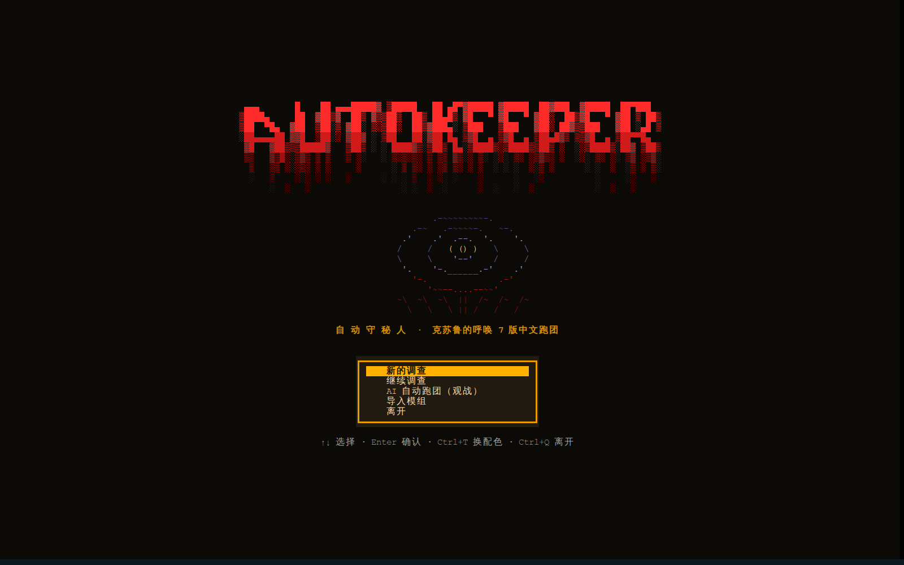

Ph'nglui mglw'nafh Cthulhu R'lyeh wgah'nagl fhtagn.
我以为，世上最仁慈的事，莫过于人类的心智
无法把它所知的一切关联起来。
H. P. 洛夫克拉夫特 ·《克苏鲁的呼唤》
CALL OF CTHULHU / 7TH EDITION
AutoKeeper
在终端里，开一场调查。
你扮演调查员，用中文说出想做的事。AI 担任守秘人，铺陈场景、扮演遇到的人，在需要检定时请你掷骰。可以独自出发，带上 AI 同伴，也可以叫朋友凑一桌。
中文 CoC 7 版 · 终端 / 浏览器 · 开源 MIT


从早班火车进站开始
挑好模组和调查员，守秘人会顺着角色背景拉开序幕。《追书人》从早班火车驶入阿诺兹堡讲起：托马斯的家在小镇尽头的公墓旁，走过去还有一段路。你可以先向站务员问路、找家餐馆吃早饭，或拐进图书馆查查旧报纸。走到原作没写的地方，守秘人会即兴补出人物、地点和支线，写进这一局的存档；偏爱原作的话，也能切回严格模式。
需要检定时，桌面会请你投掷物理十面骰。失败之后要不要花幸运、要不要孤注一掷，由你当场决定。剪报和信件可以展开读原文、看原图，见过的人和找到的线索也会留在地图、线索本与人物卡里。每回合自动存档，下次接着往下查。

老照片与插图会转成彩色字符画，雨雪、雾气和灯影随场景变化，NPC 开口时立绘登场。关键时刻则展开整屏大场景。即兴的人物与地点也能配图；开启 AI 画图后，老宅失火、NPC 受伤，还可以按原图重绘。这项功能需要本机安装并登录 Codex。
把你手上的模组拿来跑
仓库自带《追书人》《冬雪之下》和《有些人油盐不进》，装好就能开第一局。想跑自己的收藏，把 PDF、Word、Markdown、文本或 ZIP 模组拖进导入界面就行，也可以用下面这行命令。AI 会通读原文，整理人物、地点、线索和事件，保留插图与手稿，校验后编译成可以直接游玩的模组。
uv run autokeeper import 模组.pdf原作里的特殊规则，也带进来
疾病蔓延、资源消耗、倒计时，或者一段书架机关，都可以用规则插件处理。AI 能在编译时编写插件，跑通沙箱测试后再加载；开团后临时想加家规，也能用一句话提出。插件还可以出选择、填空、排序与棋盘小游戏。
看看规则插件一个人随时开，
或者叫朋友凑一桌
开局前可以直接用模组预设，也能建自己的调查员。给一句人设，或填一个历史、公众人物的名字，AI 会协助找肖像、问背景，再按七版规则核算属性与技能点。手上的老卡也能带来：骰娘 .st、表格、PDF、纸质卡照片和酒馆卡都有对应的导入方式。建好的角色留在角色库，下次还能用。
想约朋友，就在标题页开房间，把网址发过去。朋友用浏览器打开就能车卡入座，不用装环境或配密钥；模型和存档由房主负责，没坐满的座位可以交给 AI。人齐后各自提交行动，守秘人按顺序往下讲。支持局域网，也可以通过虚拟局域网异地联机。连接说明 ↗
 《冬雪之下》开房界面
《冬雪之下》开房界面
想单纯看看故事，也有观战模式，让 AI 调查员自己跑完整局。
骰子放好了，开团吧。
需要 Python 3.12+、uv 和 Node.js 18+。建议一起装上 chafa，把照片画成彩色字符。准备好之后，克隆仓库、安装依赖，再让 doctor 检查一下环境。
git clone https://github.com/satoshinji2992/autokeeper
cd autokeeper
uv sync --extra claude --extra graphrag
uv run autokeeper setup
uv run autokeeper doctor用手头的模型启动
uv run autokeeper使用本机已登录的 Claude Code，也可以设置 ANTHROPIC_API_KEY。
进入标题页，选「新的调查」，挑好模组和调查员就能开场。想用浏览器玩，运行 uv run autokeeper serve。模型配置、用量和预算都可以在设置里调整，详细操作见游玩指南。
从 0.0.1 升级？先备份旧存档。
0.0.2 将数据整理到 data/，自己的调查员、本地模型和知识库会自动迁移，但旧版存档不能继续读取。升级前请备份 saves/。完整更新记录 ↗